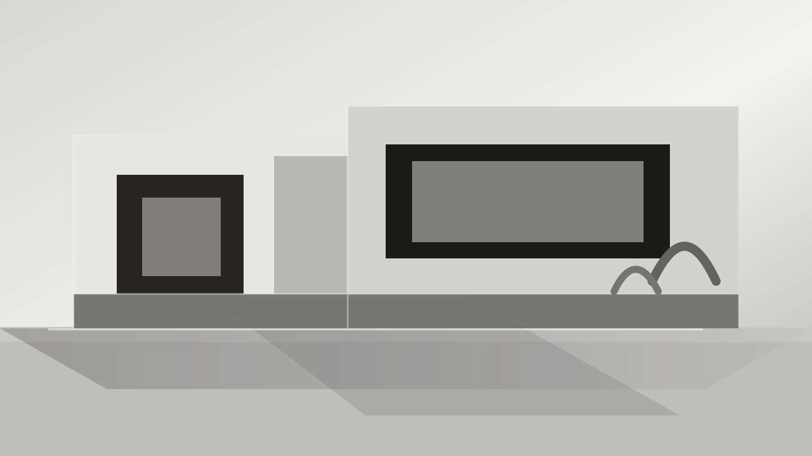

溪岸住宅更新
Hangzhou · Residential · Courtyard Renewal
以两条采光轴线重组旧宅结构，让庭院、客厅与工作区形成连续的生活场景。
Architecture Design Studio
以清晰的空间秩序、克制的材料语言和可落地的建造逻辑，完成住宅、文化与城市更新项目。

Studio
序构建筑关注空间在真实使用中的稳定品质：清楚的场地判断、简洁的平面组织、可维护的材料系统，以及不依赖装饰的空间气质。
Selected Works
Hangzhou · Residential · Courtyard Renewal
以两条采光轴线重组旧宅结构，让庭院、客厅与工作区形成连续的生活场景。
Suzhou · Cultural · Exhibition System
通过低饱和材料、连续墙体与可变展陈系统，建立安静而高效的文化空间。
Shanghai · Commercial · Urban Infill
保留街区尺度与立面节奏，在紧凑场地中嵌入零售、咖啡与小型活动功能。
Method
先厘清使用者、预算、运营方式与场地限制，避免方案在后期被反复推倒。
用轴线、模数、界面和材料系统控制空间，减少不必要的造型表达。
通过日常动线、视线关系和光线进入方式，校准空间的使用效率。
从触感、尺度、声光环境与维护方式验证细节，让品质可以长期保持。
Scope
Start A Project